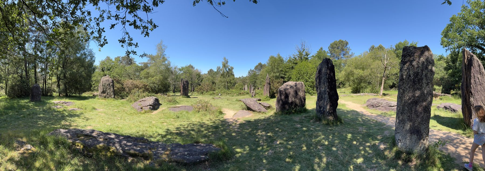

votre guide en brocéliande
Un pays, quatre façons de le vivre.
Il y a la Bretagne des cartes postales, et il y a la mienne. Celle des sentiers oubliés, des chênes millénaires, des chapelles au bord du chemin. Celle où l'on marche pieds nus dans la lande, où l'on écoute plus qu'on ne parle. Celle où le soin commence avant d'entrer sur la table.

01
Magie
La forêt de Brocéliande, ses arbres-cathédrales, la lumière qui filtre entre les feuilles.

02
Histoire
Mégalithes, châteaux à douves, pierres qui se souviennent des celtes.

03
Bien-être
Massages ayurvédiques, marches en lande, silence, respiration, retour à soi.

04
Gourmandises
Cidre fermier, galettes de sarrasin, fruits de mer, kouign-amann tiède au goûter.